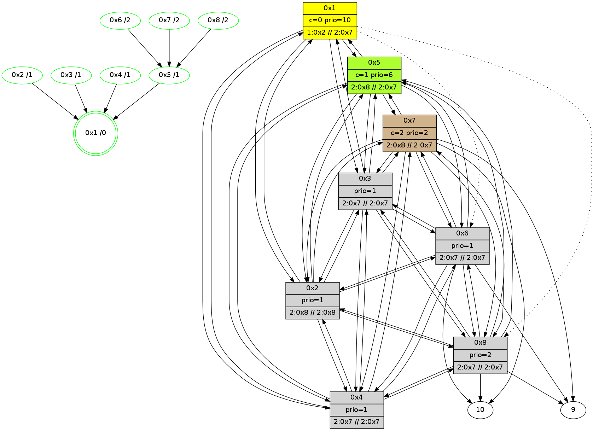

>> << IDX [start] -100 -25 -5 +0 +5 +25 +100 [405.225131035]
 Previous packets
----------------------------------------------------------------------
400.496267 beacon01(11f6) #0 coord=01,02,03,04,05,06,07,08,0a,09 cycle=688.0ms assoc
-- color-indic=1 64 1e 86
400.506445 beacon02(11f6) #0 coord=01,02,03,04,05,06,07,08,0a,09 cycle=688.0ms assoc 64 8d b7
400.516402 beacon03(11f6) #0 coord=01,02,03,04,05,06,07,08,0a,09 cycle=688.0ms assoc 64 f7 fa
400.526402 beacon04(11f6) #0 coord=01,02,03,04,05,06,07,08,0a,09 cycle=688.0ms assoc 64 80 10
400.536403 beacon05(11f6) #0 coord=01,02,03,04,05,06,07,08,0a,09 cycle=688.0ms assoc 64 fa 5d
400.546403 beacon06(11f6) #0 coord=01,02,03,04,05,06,07,08,0a,09 cycle=688.0ms assoc 64 74 8a
400.556403 beacon07(11f6) #0 coord=01,02,03,04,05,06,07,08,0a,09 cycle=688.0ms assoc 64 0e c7
400.566407 beacon08(11f6) #0 coord=01,02,03,04,05,06,07,08,0a,09 cycle=688.0ms assoc 64 8b 56
400.601946 [Hello(3): seq=201 sym=1,2,7,5,6,8,4 sysInfo=hasWarning,coloring-mode-on,ColoringModeIndicationCalled stat=1:9,4,4,0/2:14,3,1,14/7:12,3,1,9/5:10,4,1,2/6:6,4,1,12/8:11,3,14,2/4:1,3,2,13]
400.606436 [STC(3)->1 #0.21 new-neigh,stable,to-color d=1]
400.659912 [Hello(5): seq=201 sym=1,2,7,6,3,8,4 sysInfo=hasWarning,coloring-mode-on,ColoringModeIndicationCalled stat=1:9,3,4,0/2:14,4,2,13/7:15,3,1,10/6:9,4,0,12/3:1,3,3,12/8:12,3,14,2/4:15,4,0,12]
400.665555 [Hello(8): seq=201 sym=2,7,5,6,3,4,10,9 sysInfo=coloring-mode-on,ColoringModeIndicationCalled stat=2:10,3,1,13/7:6,4,1,10/5:4,3,2,2/6:3,4,15,11/3:0,2,1,12/4:13,3,0,12/10:15,1,11,7/9:6,2,10,2]
400.669419 [Hello(2): seq=201 sym=1,7,5,3,8,4,6 sysInfo=hasWarning,coloring-mode-on,ColoringModeIndicationCalled stat=1:8,4,4,0/7:11,3,1,10/5:13,4,3,2/3:13,3,1,11/8:11,3,14,2/4:13,3,2,13/6:1,4,0,12]
400.702989 [Hello(4): seq=201 sym=1,2,5,6,3,8,7 sysInfo=coloring-mode-on,ColoringModeIndicationCalled stat=1:8,3,5,0/2:15,4,3,13/5:2,3,4,2/6:7,4,1,12/3:3,3,1,11/8:13,3,13,2/7:1,3,1,10]
400.707142 [STC(4)->1 #0.21 new-neigh,stable,to-color d=1]
400.725901 [Hello(7): seq=201 sym=10,5,6,8,3,2,4,9 sysInfo=coloring-mode-on,ColoringModeIndicationCalled stat=10:14,2,14,8/5:5,3,3,2/6:3,4,0,12/8:1,4,1,3/3:5,2,2,12/2:4,3,0,11/4:3,3,14,10/9:13,4,1,3]
400.730818 [STC(7)->5-.->1 #0.21 new-neigh,stable,to-color d=2]
400.745938 [Hello(6): seq=201 sym=10,7,5,3,8,4,2,9 sysInfo=hasWarning,coloring-mode-on,ColoringModeIndicationCalled stat=10:12,2,12,7/7:7,4,2,10/5:2,3,3,2/3:4,3,2,13/8:15,4,0,3/4:8,3,0,12/2:6,3,0,11/9:2,2,1,3]
400.749595 [STC(6)->5-.->1 #0.21 new-neigh,stable,to-color d=2]
----------------------------------------------------------------------
401.284403 beacon01(11f6) #0 coord=01,02,03,04,05,06,07,08,0a,09 cycle=688.0ms assoc
-- color-indic=1 64 a2 83
401.294579 beacon02(11f6) #0 coord=01,02,03,04,05,06,07,08,0a,09 cycle=688.0ms assoc 64 31 b2
401.304537 beacon03(11f6) #0 coord=01,02,03,04,05,06,07,08,0a,09 cycle=688.0ms assoc 64 4b ff
401.314538 beacon04(11f6) #0 coord=01,02,03,04,05,06,07,08,0a,09 cycle=688.0ms assoc 64 3c 15
401.324539 beacon05(11f6) #0 coord=01,02,03,04,05,06,07,08,0a,09 cycle=688.0ms assoc 64 46 58
401.334539 beacon06(11f6) #0 coord=01,02,03,04,05,06,07,08,0a,09 cycle=688.0ms assoc 64 c8 8f
401.344539 beacon07(11f6) #0 coord=01,02,03,04,05,06,07,08,0a,09 cycle=688.0ms assoc 64 b2 c2
401.354543 beacon08(11f6) #0 coord=01,02,03,04,05,06,07,08,0a,09 cycle=688.0ms assoc 64 37 53
401.398313 [Color(5) seq=4 @0:0 prio=6 >10.@1,2.@7,2.@8,1.@2 >>10.@1,6.@5,2.@7]
401.437489 [Color(8) seq=4 @0:0 prio=2 >6.@5,2.@7,1.@2,1.@3 >>10.@1,6.@5,2.@7]
401.447867 [Color(3) seq=4 @0:0 prio=1 >10.@1,6.@5,2.@7,2.@8 >>10.@1,6.@5,2.@7]
401.479836 [Color(6) seq=4 @0:0 prio=1 >6.@5,2.@7,2.@8,1.@2 >>10.@1,6.@5,2.@7]
401.485951 [Color(4) seq=4 @0:0 prio=1 >10.@1,6.@5,2.@7,2.@8 >>10.@1,6.@5,2.@7]
401.508167 [Hello(1): seq=202 sym=5,3,2,4 asym=8,6 sysInfo=hasWarning,coloring-mode-on,ColoringModeRequestCalled stat=5:14,4,4,2/3:4,4,3,13/2:14,3,2,14/4:2,5,3,14/8:0,4,14,2/6:13,5,1,12]
401.512588 [Color(1) seq=4 @0:0 color=0 prio=10 >6.@5,1.@2,1.@3,1.@4 >>6.@5,2.@7,2.@8]
401.518445 [Color(7) seq=4 @0:0 prio=2 >6.@5,2.@8,1.@2,1.@3 >>10.@1,6.@5,2.@7]
401.521245 [Color(2) seq=4 @0:0 prio=1 >6.@5,2.@7,2.@8,1.@3 >>6.@5,2.@7,2.@8 c=0]
----------------------------------------------------------------------
402.072584 beacon01(11f6) #0 coord=01,02,03,04,05,06,07,08,0a,09 cycle=688.0ms assoc
-- color-indic=1 64 66 8d
402.082734 beacon02(11f6) #0 coord=01,02,03,04,05,06,07,08,0a,09 cycle=688.0ms assoc 64 f5 bc
402.092720 beacon03(11f6) #0 coord=01,02,03,04,05,06,07,08,0a,09 cycle=688.0ms assoc 64 8f f1
402.102719 beacon04(11f6) #0 coord=01,02,03,04,05,06,07,08,0a,09 cycle=688.0ms assoc 64 f8 1b
402.112719 beacon05(11f6) #0 coord=01,02,03,04,05,06,07,08,0a,09 cycle=688.0ms assoc 64 82 56
402.122720 beacon06(11f6) #0 coord=01,02,03,04,05,06,07,08,0a,09 cycle=688.0ms assoc 64 0c 81
402.132719 beacon07(11f6) #0 coord=01,02,03,04,05,06,07,08,0a,09 cycle=688.0ms assoc 64 76 cc
402.142723 beacon08(11f6) #0 coord=01,02,03,04,05,06,07,08,0a,09 cycle=688.0ms assoc 64 f3 5d
402.178032 [Hello(6): seq=202 sym=10,7,5,3,8,4,2,9 sysInfo=hasWarning,coloring-mode-on,ColoringModeIndicationCalled stat=10:12,2,12,7/7:7,5,2,10/5:2,4,3,2/3:4,4,2,13/8:15,5,0,3/4:8,4,0,12/2:6,4,0,11/9:2,3,2,3]
402.189362 [Hello(7): seq=202 sym=10,5,6,8,3,2,4,9 sysInfo=coloring-mode-on,ColoringModeIndicationCalled stat=10:14,2,14,8/5:5,4,3,2/6:5,5,1,12/8:1,5,1,3/3:5,3,2,12/2:4,4,0,11/4:3,4,14,10/9:13,5,2,3]
402.193547 [Hello(2): seq=202 sym=1,7,5,3,8,4,6 sysInfo=hasWarning,coloring-mode-on,ColoringModeIndicationCalled stat=1:9,5,4,0/7:12,4,2,10/5:13,5,3,2/3:13,4,1,11/8:12,4,14,2/4:14,4,3,13/6:3,5,1,12]
402.213656 [Hello(5): seq=202 sym=1,2,7,6,3,8,4 sysInfo=hasWarning,coloring-mode-on,ColoringModeIndicationCalled stat=1:10,4,4,0/2:15,5,2,13/7:1,4,2,10/6:11,5,1,12/3:1,4,3,12/8:13,4,14,2/4:0,5,1,12]
402.222655 [Hello(3): seq=202 sym=1,2,7,5,6,8,4 sysInfo=hasWarning,coloring-mode-on,ColoringModeIndicationCalled stat=1:10,5,4,0/2:15,4,1,14/7:14,4,2,9/5:12,5,1,2/6:8,5,2,12/8:12,4,14,2/4:2,4,3,13]
402.237910 [Hello(8): seq=202 sym=2,7,5,6,3,4,10,9 sysInfo=coloring-mode-on,ColoringModeIndicationCalled stat=2:11,4,1,13/7:8,5,2,10/5:5,4,2,2/6:5,5,0,11/3:1,3,1,12/4:14,4,1,12/10:1,2,12,7/9:6,3,11,2]
402.319617 [Hello(4): seq=202 sym=1,2,5,6,3,8,7 sysInfo=coloring-mode-on,ColoringModeIndicationCalled stat=1:9,4,5,0/2:0,5,3,13/5:3,4,4,2/6:9,5,2,12/3:4,4,1,11/8:14,4,13,2/7:3,4,2,10]
----------------------------------------------------------------------
402.860720 beacon01(11f6) #0 coord=01,02,03,04,05,06,07,08,0a,09 cycle=688.0ms assoc
-- color-indic=1 64 da 88
402.870889 beacon02(11f6) #0 coord=01,02,03,04,05,06,07,08,0a,09 cycle=688.0ms assoc 64 49 b9
402.880855 beacon03(11f6) #0 coord=01,02,03,04,05,06,07,08,0a,09 cycle=688.0ms assoc 64 33 f4
402.890855 beacon04(11f6) #0 coord=01,02,03,04,05,06,07,08,0a,09 cycle=688.0ms assoc 64 44 1e
402.900855 beacon05(11f6) #0 coord=01,02,03,04,05,06,07,08,0a,09 cycle=688.0ms assoc 64 3e 53
402.910856 beacon06(11f6) #0 coord=01,02,03,04,05,06,07,08,0a,09 cycle=688.0ms assoc 64 b0 84
402.920856 beacon07(11f6) #0 coord=01,02,03,04,05,06,07,08,0a,09 cycle=688.0ms assoc 64 ca c9
402.930861 beacon08(11f6) #0 coord=01,02,03,04,05,06,07,08,0a,09 cycle=688.0ms assoc 64 4f 58
402.971488 [Color(6) seq=5 @0:0 prio=1 >6.@5,2.@7,2.@8,1.@2 >>6.@5,2.@7,2.@8 c=;0]
402.994783 [Color(8) seq=5 @0:0 prio=2 >6.@5,2.@7,1.@2,1.@3 >>6.@5,2.@7,2.@8 c=;0]
403.006054 [Color(2) seq=5 @0:0 prio=1 >6.@5,2.@7,2.@8,1.@3 >>6.@5,2.@7,2.@8 c=0]
403.045167 [Color(3) seq=5 @0:0 prio=1 >6.@5,2.@7,2.@8,1.@2 >>6.@5,2.@7,2.@8 c=0]
403.058468 [Color(5) seq=5 @0:0 color=1 prio=6 >2.@7,2.@8,1.@2,1.@3 >>6.@5,2.@7,2.@8 c=0]
403.065440 [Color(4) seq=5 @0:0 prio=1 >6.@5,2.@7,2.@8,1.@2 >>6.@5,2.@7,2.@8 c=0]
403.097995 [Hello(1): seq=203 sym=5,3,2,4 asym=8,6 sysInfo=hasWarning,coloring-mode-on,ColoringModeRequestCalled stat=5:15,5,4,2/3:5,5,3,13/2:15,5,2,14/4:3,6,3,14/8:1,5,14,2/6:14,6,1,12]
403.101471 [Color(1) seq=5 @0:0 color=0 prio=10 >1.@2,1.@3,1.@4 >>2.@7,2.@8,1.@2 c=1]
----------------------------------------------------------------------
403.648858 beacon01(11f6) #0 coord=01,02,03,04,05,06,07,08,0a,09 cycle=688.0ms assoc
-- color-indic=1 64 0e bd
403.659019 beacon02(11f6) #0 coord=01,02,03,04,05,06,07,08,0a,09 cycle=688.0ms assoc 64 9d 8c
403.668993 beacon03(11f6) #0 coord=01,02,03,04,05,06,07,08,0a,09 cycle=688.0ms assoc 64 e7 c1
403.678994 beacon04(11f6) #0 coord=01,02,03,04,05,06,07,08,0a,09 cycle=688.0ms assoc 64 90 2b
403.688994 beacon05(11f6) #0 coord=01,02,03,04,05,06,07,08,0a,09 cycle=688.0ms assoc 64 ea 66
403.708995 beacon07(11f6) #0 coord=01,02,03,04,05,06,07,08,0a,09 cycle=688.0ms assoc 64 1e fc
403.718998 beacon08(11f6) #0 coord=01,02,03,04,05,06,07,08,0a,09 cycle=688.0ms assoc 64 9b 6d
403.763906 [Hello(2): seq=203 sym=1,7,5,3,8,4,6 sysInfo=hasWarning,coloring-mode-on,ColoringModeIndicationCalled stat=1:10,6,4,0/7:13,4,2,10/5:14,6,3,2/3:14,5,1,11/8:13,5,14,2/4:15,5,3,13/6:3,6,1,12]
403.768280 [Hello(5): seq=203 sym=1,2,7,6,3,8,4 sysInfo=hasWarning,coloring-mode-on,ColoringModeIndicationCalled stat=1:11,5,4,0/2:0,6,2,13/7:1,4,2,10/6:11,6,1,12/3:2,5,3,12/8:14,5,14,2/4:1,6,1,12]
403.810295 [Hello(3): seq=203 sym=1,2,7,5,6,8,4 sysInfo=hasWarning,coloring-mode-on,ColoringModeIndicationCalled stat=1:11,6,4,0/2:0,5,1,14/7:14,4,2,9/5:13,6,1,2/6:8,6,2,12/8:13,5,14,2/4:3,5,3,13]
403.813876 [STC(1) #0.22 new-neigh,stable,to-color d=0]
403.829895 [Hello(7): seq=203 sym=10,5,6,8,3,2,4,9 sysInfo=coloring-mode-on,ColoringModeIndicationCalled stat=10:15,3,14,8/5:7,5,3,2/6:5,6,1,12/8:2,6,1,3/3:7,4,2,12/2:4,4,0,11/4:4,5,14,10/9:14,6,2,3]
403.834065 [Hello(6): seq=203 sym=10,7,5,3,8,4,2,9 sysInfo=hasWarning,coloring-mode-on,ColoringModeIndicationCalled stat=10:13,3,12,7/7:8,5,2,10/5:4,4,3,2/3:6,5,2,13/8:0,6,0,3/4:9,5,0,12/2:6,4,0,11/9:3,4,2,3]
403.902463 [Hello(4): seq=203 sym=1,2,5,6,3,8,7 sysInfo=coloring-mode-on,ColoringModeIndicationCalled stat=1:10,5,6,0/2:1,6,3,13/5:4,5,4,2/6:10,6,2,12/3:5,5,1,11/8:14,5,13,2/7:4,4,2,10]
403.905027 [STC(4)->1 #0.22 new-neigh,stable,to-color d=1]
----------------------------------------------------------------------
404.436995 beacon01(11f6) #0 coord=01,02,03,04,05,06,07,08,0a,09 cycle=688.0ms assoc
-- color-indic=1 64 b2 b8
404.447149 beacon02(11f6) #0 coord=01,02,03,04,05,06,07,08,0a,09 cycle=688.0ms assoc 64 21 89
404.457130 beacon03(11f6) #0 coord=01,02,03,04,05,06,07,08,0a,09 cycle=688.0ms assoc 64 5b c4
404.467131 beacon04(11f6) #0 coord=01,02,03,04,05,06,07,08,0a,09 cycle=688.0ms assoc 64 2c 2e
404.477131 beacon05(11f6) #0 coord=01,02,03,04,05,06,07,08,0a,09 cycle=688.0ms assoc 64 56 63
404.487132 beacon06(11f6) #0 coord=01,02,03,04,05,06,07,08,0a,09 cycle=688.0ms assoc 64 d8 b4
404.497131 beacon07(11f6) #0 coord=01,02,03,04,05,06,07,08,0a,09 cycle=688.0ms assoc 64 a2 f9
404.507134 beacon08(11f6) #0 coord=01,02,03,04,05,06,07,08,0a,09 cycle=688.0ms assoc 64 27 68
404.569522 [STC(3)->1 #0.22 new-neigh,stable,to-color d=1]
404.572139 [Color(3) seq=6 @0:0 prio=1 >2.@7,2.@8,1.@2,1.@4 >>2.@7,2.@8,1.@2 c=0,1]
404.583599 [Hello(1): seq=204 sym=5,3,2,4 asym=8,6 sysInfo=hasWarning,coloring-mode-on,ColoringModeRequestCalled stat=5:0,5,4,2/3:5,6,4,13/2:0,5,2,14/4:4,6,4,14/8:1,5,14,2/6:15,6,1,12]
404.588349 [Color(1) seq=6 @0:0 color=0 prio=10 >1.@2,1.@3,1.@4 >>2.@7,2.@8,1.@2 c=1]
404.591673 [Color(6) seq=6 @0:0 prio=1 >2.@7,2.@8,1.@2,1.@3 >>2.@7,2.@8,1.@2 c=;0,1]
404.595439 [Color(4) seq=6 @0:0 prio=1 >2.@7,2.@8,1.@2,1.@3 >>2.@7,2.@8,1.@2 c=0,1]
404.607292 [Color(8) seq=6 @0:0 prio=2 >2.@7,1.@2,1.@3,1.@4 >>2.@7,2.@8,1.@2 c=1;0]
404.629036 [Color(7) seq=6 @0:0 color=2 prio=2 >2.@8,1.@2,1.@3,1.@4 >>2.@7,2.@8,1.@2 c=1;0]
404.642658 [STC(5)->1 #0.22 new-neigh,stable,to-color d=1]
404.645594 [Color(5) seq=6 @0:0 color=1 prio=6 >2.@8,1.@2,1.@3,1.@4 >>2.@7,2.@8,1.@2 c=0,2]
404.651675 [STC(2)->1 #0.22 new-neigh,stable,to-color d=1]
404.654611 [Color(2) seq=6 @0:0 prio=1 >2.@8,1.@3,1.@4,1.@6 >>2.@8,1.@2,1.@3 c=0,1,2]